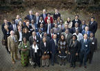
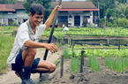
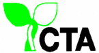
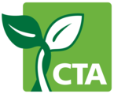

CTA S&T programme
CTA’s Knowledge for Development programme supports the policy dialogue on S&T for agricultural and rural development in African, Caribbean and Pacific (ACP) countries. It enables the ACP scientific community – primarily agricultural research and development scientists and technologists, policy makers, farmers and other stakeholders – to share and review the results of national and regional efforts and collaborate in harnessing S&T for the development of agriculture in their countries.
{kind=link}

The Advisory Committee (AC) on Science and Technology for ACP Agricultural and Rural Development issued a communiqué at the end of their 9th meeting in South Africa from 22 – 26 November 2010 on “Science, Indigenous Knowledge and Innovation: Implications for ACP Agriculture”. The AC acknowledged the value of indigenous knowledge as a richly diverse resource for directing the future of science and innovation and upheld the principle that holders of this knowledge must be able to share in any benefits derived through scientific pursuits. The AC learned valuable lessons for advancing the integration of IK in the science and innovation agenda in ACP countries and recognized the need for shared understanding and ethical standards to govern the documentation and scientific validation of IK. The following are their recommendations:
ACP countries should invest in IK as an integral part of their science and innovation agendas.
Ethical standards must be developed and adhered to for the integration of IK into formal science.
ACP countries should continue to lobby for increased funding for R&D. Partnerships with the private sector are crucial for up-scaling and commercializing promising IK leads.
ACP countries should institute relevant policies and legislative frameworks to support harnessing of IK and to protect the rights of all stakeholders including IK holder(s) and communities.
ACP countries should focus on strengthening research, training and extension and mainstream indigenous knowledge into these programmes for sustainable development.
CTA should take steps to:
(i) involve IK holders in agricultural science technology and innovation platforms;
(ii) support capacity building of research and higher education organizations on the legal issues governing IK;
(iii) support a publication series of case studies on IK; convene an international symposium on IK systems in 2012.
Earlier documents and key notes related to the 9th meeting have been published here. 21/02/2011
Read more...
Read more...
The theme for the 9th AC meeting in South Africa is ‘Science, Indigenous Knowledge and Innovation: Implications for ACP Agriculture’ and it is preceded by the annual e-consultation. This focus is appropriate as AC members continue their efforts to advocate for policy and institutional change and adequate financial resources, for undertaking innovative research and teaching and adapting existing knowledge in support of socio-economic development. The definition, articulation and promotion of scientific knowledge as being inclusive and the shared recognition of the need for continuous engagement with policymakers and other stakeholders and greater linkage between science and society are very relevant to future innovation in and development of agriculture which remains the mainstay of several ACP economies.The workshop programme can be downloaded below (DOC file). It presents the day-to-day programme of the workshop.Venue: Premier Hotel O.R. Tambo, Johannesburg, South Africa.Dates: 22-26 November 2010, check document for time schedule.Updates as of December 2010: - Read the 9th AC Meeting's "Key messages" by Judith Ann Francis - Read the presentation by Dr. Yonah Seleti on indigeneous knowledge in the bio-economy in AfricaUpdates as of January 2011:- Keynote address by Pr. Gérard Toulouse "Making Science more Inclusive: The history of knowledge production"- Presentation and article by Prof. Ermias Dagne, "Validating traditional medicines"Updates as of February 2011:- Final communiqué by Judith A. Francis. 08/11/2010
Read more...
{kind=link}
Read more...

Since 2004, CTA has contributed to building ACP capacity on understanding, analyzing and strengthening agricultural, science, technology and innovation (ASTI) systems. CTA has supported the conduct of numerous ASTI case studies focusing on various agricultural commodities of importance to ACP countries using the innovation system approach. The criterion for choosing the commodities, was based on either their contribution to food security, export earnings, export diversification or under threat from loss of preferential markets. The motive was clear: to build capacity of ACP professionals to better understand and apply the innovation systems approach in analyzing the performance of the agricultural sector in their countries and develop a network of experts. CTA provided the opportunity for the ACP professionals to implement/apply the skills by availing both financial resources and technical support to enable them and their organizations to understand innovation processes. 21/02/2011
Read more...
Read more...

ICTs transforming agricultural science and innovation – implications for ACP agricultureThe ACP agricultural sector faces numerous challenges in effectively satisfying the food and nutrition needs of its growing population and the requirements for competing in global markets in addition to fulfilling its role as a driver of economic growth and social development. These challenges are compounded by (i) under investments in agriculture, science, research, tertiary education and inadequate physical infrastructure, (ii) dwindling natural resource base – land and water, climate change and soil degradation, (iii) declining human resource base with the necessary competencies and skills to generate, access, contextualize and optimize knowledge and technologies, (iv) inadequate recognition of local / traditional knowledge and (v) the global economic meltdown and energy crisis. ICTs hold the potential but there is need to overcome the barriers to making optimum use of science and technological innovations if the ACP region is to fully participate in the global knowledge system for improving ACP agricultural performance. Investments in physical infrastructure and human resource development must increase. 28/10/2009
Read more...
{kind=link}
Read more...
The concept of a ‘critical mass of scientists’ has entered the policy discussions of the Advisory Committee on Science and Technology for ACP Agricultural and Rural Development. The AC members took up the challenge to reflect and elaborate on the concept during their 2008 e-consultation. 02/12/2008
Read more...
{kind=link}
Read more...
E-mail Newsletter
Interact with us
Members
- Is the innovation systems approach the answer to inclusive development?
- CTA Top 20 Innovations that Benefit Smallholder Farmers
- Enhancing private sector engagement in agricultural research and development in eastern Africa
- Intellectual property rights in plant breeding and the impact on agricultural innovation
- The ethics of animal production and sustainability